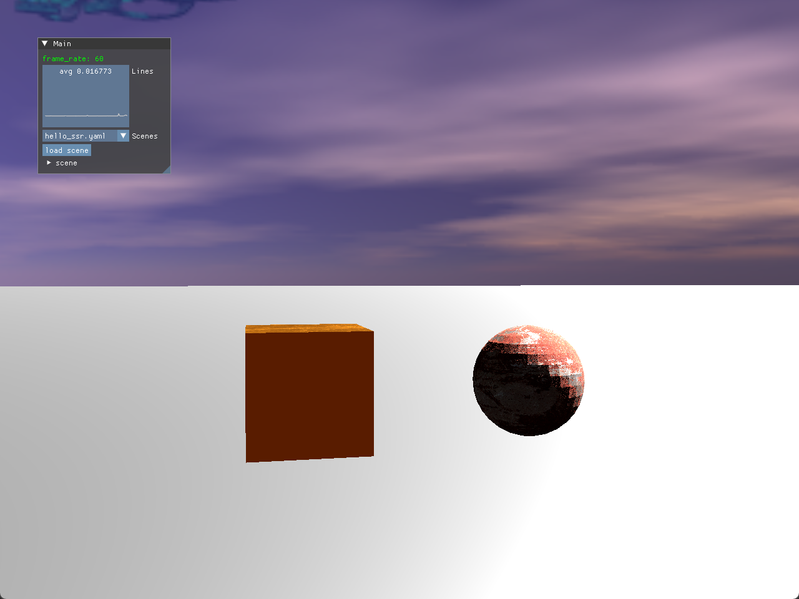

前言

这又是一张平平无奇的渲染图，和上一篇文章的那张图片好像也没什么区别。从表面上看是的，在渲染效果上这张图片没有什么进步，但是这张图片是用了另外的技术实现的，也就是延迟渲染。
延迟渲染这个概念在网上有很多的资料，我也在我之前的一篇文章介绍过，所以这篇文章我不会再对延迟渲染的概念做介绍。今天这篇文章的主要内容，是如何在Vulkan中实现这个效果。
在Vulkan中实现延迟渲染
当然，延迟渲染的原理是一样的，无论是用Vulkan还是OpenGL，大概分为两个步骤：
- 几何阶段和光照阶段。在几何阶段搜集画面中用于光照计算的信息。
- 传输到光照阶段计算出最终的结果。
既然Vulkan和OpenGL实现是差不多的，为什么这里还有专门写一篇文章呢？因为在Vulkan中，可以利用RenderPass中的subpass，来将两个步骤放到同一个render pass中，这样可以减少延迟渲染两个阶段之间的额外数据处理和传输，从而提升性能。
Vulkan中的Render Pass和Subpass
在Vulkan里，Render Pass（渲染过程）是一个十分关键的概念，它对渲染操作的整体结构和流程进行了定义。简单来说，Render Pass规定了渲染操作要用到的附件（像颜色附件、深度模板附件等）、这些附件的格式以及它们在渲染过程中的使用方式。
Subpass（子通道）是 Render Pass 中的一个子集，代表了渲染过程中的一个特定阶段。每个Render Pass中至少都会有一个subpass，每个Subpass可以有自己的输入附件、颜色附件、深度模板附件等，并且可以定义这些附件的使用方式。
Subpass 的主要作用是将渲染过程拆分成多个步骤，每个步骤专注于完成特定的任务，例如几何阶段、光照阶段各自是一个单独的Subpass。通过使用 Subpass，可以在同一个渲染过程中高效地重用附件，避免不必要的内存读写操作。
延迟渲染的render pass创建
好的，在简单的介绍了一下render pass和subpass的关系之后，我们用实际的例子来介绍一下延迟渲染中具体怎么实现多个subpass的初始化。
首先，我们几何阶段需要输出四个颜色附件（位置、法线、反照率和材质参数）作为光照阶段的输入，在光照阶段需要输出一个颜色附件和深度附件作为后续渲染阶段（天空盒、后处理）的输入。因此一共有5个颜色附件和1个深度附件共6个附件。
1
2
3
4
5
6
7
8
9
10
11
12
13
14
15
16
17
18
19
20
21
22
23
24
25
26
27
28
29
30
31
32
33
34
35
36
37
38
39
40
41
42
43
44
45
46
47
48
49
50
51
52
53
54
55
| std::vector<VkAttachmentDescription> geoStageOutputAttachments = {};
{
VkAttachmentDescription positionAttachment = {};
positionAttachment.format = VK_FORMAT_R32G32B32A32_SFLOAT;
positionAttachment.samples = VK_SAMPLE_COUNT_1_BIT;
positionAttachment.loadOp = VK_ATTACHMENT_LOAD_OP_CLEAR;
positionAttachment.storeOp = VK_ATTACHMENT_STORE_OP_STORE;
positionAttachment.stencilLoadOp = VK_ATTACHMENT_LOAD_OP_DONT_CARE;
positionAttachment.stencilStoreOp = VK_ATTACHMENT_STORE_OP_DONT_CARE;
positionAttachment.initialLayout = VK_IMAGE_LAYOUT_UNDEFINED;
positionAttachment.finalLayout = VK_IMAGE_LAYOUT_SHADER_READ_ONLY_OPTIMAL;
geoStageOutputAttachments.push_back(positionAttachment);
VkAttachmentDescription normalAttachment = {};
geoStageOutputAttachments.push_back(normalAttachment);
VkAttachmentDescription albedoAttachment = {};
geoStageOutputAttachments.push_back(albedoAttachment);
VkAttachmentDescription ormAttachment = {};
geoStageOutputAttachments.push_back(ormAttachment);
VkAttachmentDescription outputColorAttachment = {};
outputColorAttachment.format = VK_FORMAT_R8G8B8A8_SRGB;
outputColorAttachment.samples = VK_SAMPLE_COUNT_1_BIT;
outputColorAttachment.loadOp = VK_ATTACHMENT_LOAD_OP_CLEAR;
outputColorAttachment.storeOp = VK_ATTACHMENT_STORE_OP_STORE;
outputColorAttachment.stencilLoadOp = VK_ATTACHMENT_LOAD_OP_DONT_CARE;
outputColorAttachment.stencilStoreOp = VK_ATTACHMENT_STORE_OP_DONT_CARE;
outputColorAttachment.initialLayout = VK_IMAGE_LAYOUT_UNDEFINED;
outputColorAttachment.finalLayout = VK_IMAGE_LAYOUT_SHADER_READ_ONLY_OPTIMAL;
geoStageOutputAttachments.push_back(outputColorAttachment);
}
VkAttachmentDescription depthAttachment = {};
depthAttachment.format = m_swapChain->FindDepthFormat();
depthAttachment.samples = VK_SAMPLE_COUNT_1_BIT;
depthAttachment.loadOp = VK_ATTACHMENT_LOAD_OP_CLEAR;
depthAttachment.storeOp = VK_ATTACHMENT_STORE_OP_STORE;
depthAttachment.stencilLoadOp = VK_ATTACHMENT_LOAD_OP_DONT_CARE;
depthAttachment.stencilStoreOp = VK_ATTACHMENT_STORE_OP_DONT_CARE;
depthAttachment.initialLayout = VK_IMAGE_LAYOUT_UNDEFINED;
depthAttachment.finalLayout = VK_IMAGE_LAYOUT_DEPTH_STENCIL_ATTACHMENT_OPTIMAL;
geoStageOutputAttachments.push_back(depthAttachment);
|
上面是创建了所有attachment，然后需要创建对应的attachment reference，其中前五个attachment是颜色附件的，最后一个是深度附件。
1
2
3
4
5
6
7
8
9
10
11
12
13
14
15
|
std::vector<VkAttachmentReference> geoStageAttachmentRefs = {};
for (int i = 0; i < geoStageOutputAttachments.size()-1; i++)
{
VkAttachmentReference colorAttachmentRef = {};
colorAttachmentRef.attachment = static_cast<uint32_t>(i);
colorAttachmentRef.layout = VK_IMAGE_LAYOUT_COLOR_ATTACHMENT_OPTIMAL;
geoStageAttachmentRefs.push_back(colorAttachmentRef);
}
VkAttachmentReference depthAttachmentRef = {};
depthAttachmentRef.attachment = static_cast<uint32_t>(geoStageOutputAttachments.size()-1);
depthAttachmentRef.layout = VK_IMAGE_LAYOUT_DEPTH_STENCIL_ATTACHMENT_OPTIMAL;
|
接下来便是subpass的创建了。
1
2
3
4
5
6
7
8
9
10
11
12
13
14
15
16
17
18
19
20
21
22
23
24
25
26
27
28
29
30
31
32
|
std::vector<VkSubpassDescription> subpasses(2);
subpasses[0].pipelineBindPoint = VK_PIPELINE_BIND_POINT_GRAPHICS;
subpasses[0].colorAttachmentCount = static_cast<uint32_t>(geoStageAttachmentRefs.size()-1);
subpasses[0].pColorAttachments = geoStageAttachmentRefs.data();
subpasses[0].pDepthStencilAttachment = &depthAttachmentRef;
std::vector<VkAttachmentReference> inputAttachmentRefs;
for (int i = 0; i < geoStageOutputAttachments.size()-2; i++)
{
VkAttachmentReference inputAttachmentRef = {};
inputAttachmentRef.attachment = static_cast<uint32_t>(i);
inputAttachmentRef.layout = VK_IMAGE_LAYOUT_SHADER_READ_ONLY_OPTIMAL;
inputAttachmentRefs.push_back(inputAttachmentRef);
}
VkAttachmentReference outputAttachmentRef = {};
outputAttachmentRef.attachment = geoStageOutputAttachments.size() - 2;
outputAttachmentRef.layout = VK_IMAGE_LAYOUT_COLOR_ATTACHMENT_OPTIMAL;
subpasses[1].pipelineBindPoint = VK_PIPELINE_BIND_POINT_GRAPHICS;
subpasses[1].inputAttachmentCount = static_cast<uint32_t>(inputAttachmentRefs.size());
subpasses[1].pInputAttachments = inputAttachmentRefs.data();
subpasses[1].colorAttachmentCount = 1;
subpasses[1].pColorAttachments = &outputAttachmentRef;
subpasses[1].pDepthStencilAttachment = &depthAttachmentRef;
|
这里可以看到我们创建了两个subpass：
- subpasses[0]是几何阶段的subpass，它的结果输出到四张颜色附件上，因此它的ColorAttachmentCount是总的颜色附件数量（5）减一等于4。
- subpasses[1]是光照阶段的subpass，它需要几何阶段的输出作为输入。我们可以将几何阶段的输出保存写到纹理里面，再利用纹理数据传输到光照阶段，这种处理和OpenGL类似，但是效率不高。Vulkan中可以利用InputAttachment将前面subpass的结果作为后续subpass的输入。
Input Attachment 是 Subpass 可以使用的一种特殊类型的附件。它允许在一个 Subpass 中写入数据到附件，然后在后续的 Subpass 中直接读取这些数据，而无需将数据从显存中复制到内存再进行传递。这种机制使得数据可以在不同的渲染阶段之间快速共享，提高了渲染效率。
最后，我们需要定义subpass之间的依赖（dependency）信息。
1
2
3
4
5
6
7
8
9
10
11
12
13
14
15
16
17
18
|
VkSubpassDependency dependency = {};
dependency.srcSubpass = 0;
dependency.srcAccessMask = VK_ACCESS_COLOR_ATTACHMENT_WRITE_BIT;
dependency.srcStageMask = VK_PIPELINE_STAGE_COLOR_ATTACHMENT_OUTPUT_BIT
| VK_PIPELINE_STAGE_EARLY_FRAGMENT_TESTS_BIT;
dependency.dstSubpass = 1;
dependency.dstStageMask= VK_PIPELINE_STAGE_FRAGMENT_SHADER_BIT
| VK_PIPELINE_STAGE_EARLY_FRAGMENT_TESTS_BIT;
dependency.dstAccessMask = VK_ACCESS_INPUT_ATTACHMENT_READ_BIT
| VK_ACCESS_DEPTH_STENCIL_ATTACHMENT_WRITE_BIT;
dependency.dependencyFlags = VK_DEPENDENCY_BY_REGION_BIT;
|
如上的依赖关系设定子通道0（几何阶段）执行结束并对颜色附件进行写入操作之后，子通道1（光照阶段）才会进行执行。至此，多subpass的初始化便完成了。
上一小节我们介绍了子通道0的输出作为子通道1的输入，这个流程不需要经过纹理的写入和读取，而是可以经过InputAttachment的传递。在shader中，我们想要读取InputAttachment的数据的话，需要经过如下的设定。
1
2
3
4
| layout(input_attachment_index = 0, set = 1, binding = 0) uniform subpassInput inPosition;
layout(input_attachment_index = 1, set = 1, binding = 1) uniform subpassInput inNormal;
layout(input_attachment_index = 2, set = 1, binding = 2) uniform subpassInput inAlbedo;
layout(input_attachment_index = 3, set = 1, binding = 3) uniform subpassInput inOrm;
|
-
layout(input_attachment_index = 0)：input_attachment_index 是一个布局限定符，用于指定要读取的输入附件的索引。在 Render Pass 中，每个附件都有一个唯一的索引，这里的 0 表示从索引为 0 的颜色附件中读取数据。
-
set = 1：set 用于指定描述符集的编号。在 Vulkan 中，描述符集是一组描述符的集合，用于向着色器传递数据。这里的 1 表示该输入附件属于编号为 1 的描述符集。
-
binding = 0：binding 用于指定描述符在描述符集中的绑定点。同一个描述符集中的不同描述符通过绑定点来区分。这里的 0 表示该输入附件在编号为 1 的描述符集中的绑定点为 0。
-
uniform subpassInput：uniform 表示这是一个统一变量，意味着在整个着色器调用过程中其值保持不变。subpassInput 是 Vulkan 着色器语言中特有的类型，用于表示从 Subpass 输入附件中读取的数据。
-
inPosition：这是变量的名称，用于在着色器代码中引用从索引为 0 的颜色附件中读取的数据。
需要注意的是，InputAttachment的也需要设定对应的DescriptorSetLayout信息，以便在DescriptorSet中被正确的引用，这里我简单用KongEngine封装过的函数来示意一下。
1
2
3
4
5
6
7
8
| auto textureLayout = VulkanDescriptorSetLayout::Builder()
.AddBinding(0, VK_DESCRIPTOR_TYPE_INPUT_ATTACHMENT, VK_SHADER_STAGE_FRAGMENT_BIT, 1)
.AddBinding(1, VK_DESCRIPTOR_TYPE_INPUT_ATTACHMENT, VK_SHADER_STAGE_FRAGMENT_BIT, 1)
.AddBinding(2, VK_DESCRIPTOR_TYPE_INPUT_ATTACHMENT, VK_SHADER_STAGE_FRAGMENT_BIT, 1)
.AddBinding(3, VK_DESCRIPTOR_TYPE_INPUT_ATTACHMENT, VK_SHADER_STAGE_FRAGMENT_BIT, 1)
.AddBinding(4, VK_DESCRIPTOR_TYPE_COMBINED_IMAGE_SAMPLER, VK_SHADER_STAGE_FRAGMENT_BIT, 1)
.Build();
|
另外还需要注意的是，InputAttachment它并不是纹理，所以并不能按照以往用纹理传递几何阶段的信息那样对InputAttachment的数据做texture()，而是需要使用subpassLoad函数。
1
2
3
| vec3 fragPos = subpassLoad(inPosition).xyz;
vec3 objNormal = subpassLoad(inNormal).xyz;
vec4 orm = subpassLoad(inOrm);
|
subpassLoad函数不需要提供额外的索引输入。在 Render Pass 的不同 Subpass 中，每个像素的处理是一一对应的。也就是说，在第一个 Subpass 里某个像素位置写入的数据，在后续使用 Input Attachment 的 Subpass 中，相同像素位置就能读取到对应的数据。
subpassLoad 函数默认读取的是当前正在处理的像素位置的数据，它会自动关联到当前片段着色器所处理的像素。所以，不需要额外提供像 UV 坐标这类信息来指定读取位置，因为当前片段的位置就决定了要读取的数据位置。
其他注意事项
至此，延迟渲染的关键步骤就是这些了。另外还需要注意的一点是，延迟渲染的光照subpass不能再对深度附件做写入了，否则后续的渲染阶段（尤其是天空盒这种需要获取场景深度信息的）的输出结果会受到影响。这里也花了我一些时间来debug。想要屏蔽掉光照阶段的深度写入，不把深度附件传入到光照阶段即可；另外一个比较推荐的方式则是在光照阶段的pipeline config里面，将depthWriteEnable关闭。
1
2
3
| pipelineConfig.subpass = 1;
pipelineConfig.depthStencilInfo.depthWriteEnable = VK_FALSE;
|
结语
好了，今天这篇文章的内容就到这了。可能Vulkan相关的内容似乎不可避免的需要贴很多代码，因为Vulkan相比较OpenGL还是太底层了，很多步骤都需要依靠调用者自己处理。但是对底层的灵活可定制化确实也体现出了它的强大，subpass的设计我认为就是很好的一个例子。